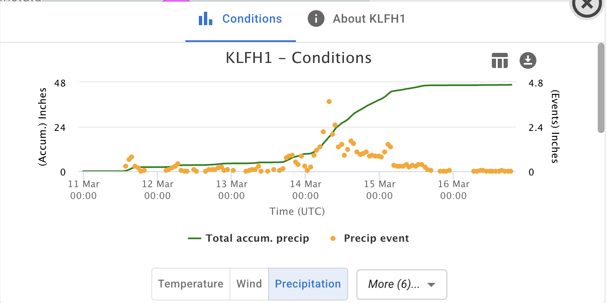
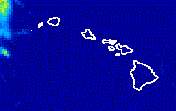
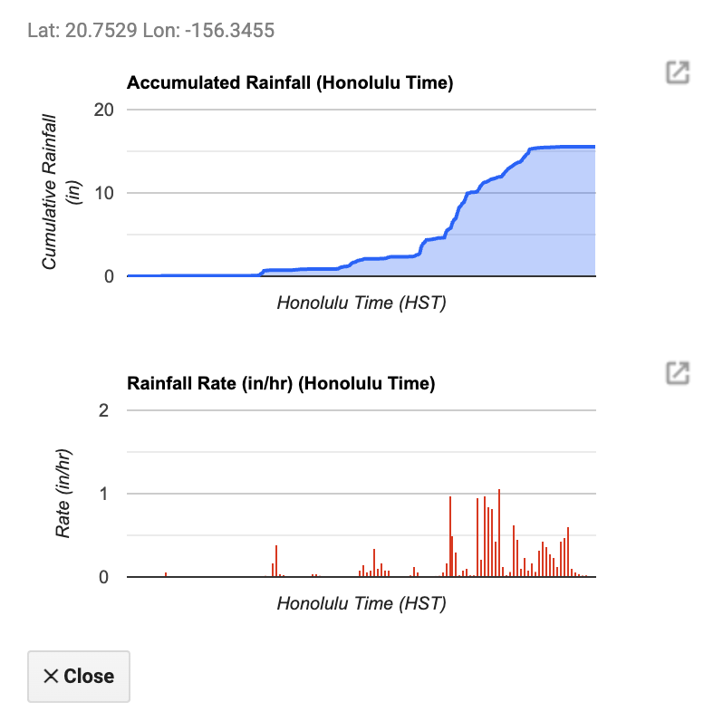

Satellite and other geospatial data also allow us to better understand the evolution and impact of the Kona Low in March 2026 on Maui County and Hawaii. There is an abundance of information online about the storm including satellite data, but it can be hard to sort through everything. On this page, we organize the sources of satellite data related to the Kona Low storms and share resources for accessing this satellite data and derived products.
ℹ️ This interactive map shows total rainfal in inches in Maui Nui (and Hawaii if you zoom out) from March 10th, 2026 through March 16th.
🔍 To see individual stations, zoom in, click on the station ↖️. Then, select "Display Conditions," and the "Precipitation" button for graphs of the total rainfall over time. Here's an example graph:

In case of low connectivity, we have linked a screenshot of the total rainfall in Maui Nui from March 10th, 2026 through March 16th.
In case of low connectivity, we have linked a screenshot of the wind gusts in miles per hour (mph) in Maui Nui on March 14th, some of the highest recorded in the storm.

ℹ️ Use the animation to track rainfall intensity over time; red areas indicate the highest rates (over 1 in/hr).
Credit: Arizona State University/NASA Acres Team using NASA GPM IMERG data.ℹ️ This interactive map allows you to see the estimated total rainfall in inches (in) from the first Kona Low Storm using GPM IMERG data. 📈Click anywhere on the map to see a local time series of rainfall rate (in/hr) and total accumulated rainfall (in) from March 9th through March 15th.
⚠️ Note that this data has not been bias-corrected yet and represent larger areas than the ground-based measurements so the total precipitation during intense rainfall may be underestimated.

{kind=link}
{kind=link}